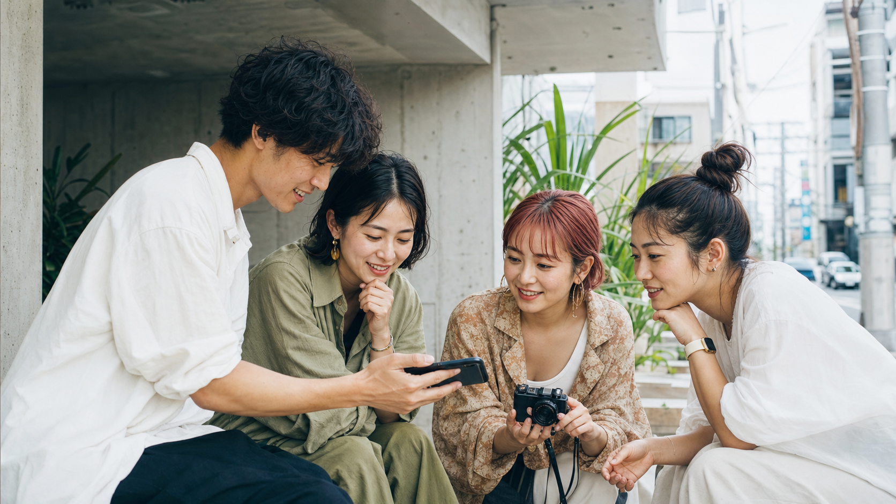
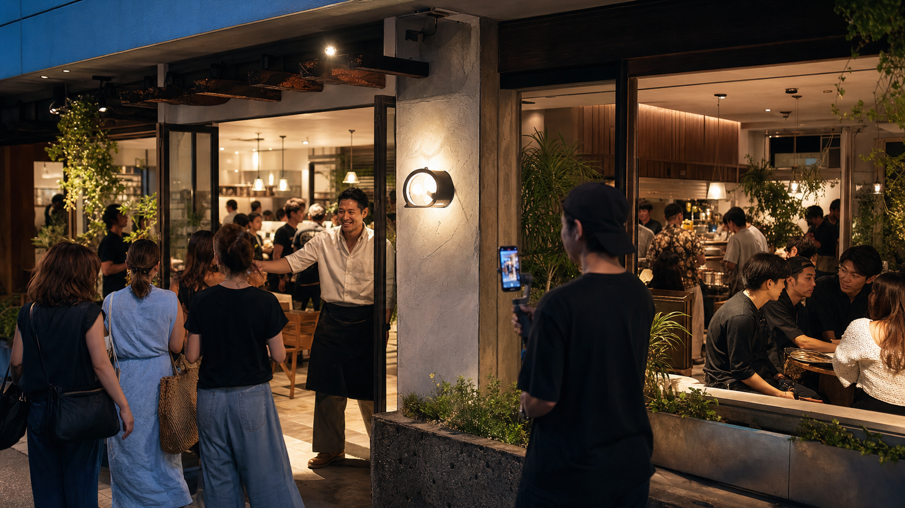

JOIN OUR NETWORK
沖縄の魅力を、
あなたの言葉で届けませんか。
あなたが見つけたお店、心に残った景色、誰かにすすめたい商品やサービス。その発信が、沖縄で挑戦する企業やお店の力になります。
- あなたのジャンルに合った案件をご案内
- 条件調整や契約をMAARUがサポート
- フォロワー数だけでなく個性と発信の質を重視
OKINAWA INFLUENCER PR NETWORK
総フォロワー数100万人以上。
地域を知るクリエイターとともに、認知だけで終わらない、
来店・予約・購入につながるPRをつくります。
OUR NETWORK
グルメ、観光、美容、ファッション、ファミリー。沖縄で影響力を持つ多彩なクリエイターと連携し、目的に合ったPRを実現します。
100万+
100名+
30種類+
WHAT WE DO
インフルエンサーPRで重要なのは、
フォロワー数の多さだけではありません。
「誰に届けたいのか」「誰が伝えるのか」「どんな見せ方なら心が動くのか」。MAARUは企業とインフルエンサーの間に立ち、企画からキャスティング、投稿、効果検証までを一貫してサポートします。
沖縄を知る私たちだからこそできる、地域の空気や暮らしに自然となじむPRを設計します。
企業の想いを、
人を動かす発信へ。
WHY MAARU
地域性や文化、県民の感覚を理解したクリエイターが参加。県民向けの集客から観光客向けの認知拡大まで、目的に応じて人選します。
紹介して終わりではありません。企画、交渉、日程調整、投稿確認、レポートまで、担当スタッフが伴走します。
フォロワー数だけではなく、属性、投稿内容、反応率、ブランドとの親和性を確認し、本当に届く組み合わせを設計します。
県外観光客や海外ユーザーへの発信にも対応。旅前の認知から、滞在中の来店・体験までを見据えたPRをご提案します。

CREATOR NETWORK
グルメ、旅、美容、ファッション、子育て、ライフスタイル。フォロワー数だけではなく、発信する世界観や得意分野、フォロワーとの関係性まで考慮して、最適な人材をご提案します。
所属クリエイターについて相談する →FOR YOUR BUSINESS
事業の段階や目的に合わせて、届ける相手と発信の形を設計します。
開業前後の期待感をつくり、地域での認知と初期来店を支援します。
沖縄の市場や生活者に合う見せ方を整え、地域との最初の接点をつくります。
県内、県外、海外。それぞれの旅行者に届くクリエイターを選定します。
発売や開催のタイミングに合わせ、保存・シェア・参加につながる企画を展開します。

PR CASE STUDY / 01
飲食店｜新店舗オープンPR
沖縄県内のグルメ系クリエイターを起用。店舗のコンセプトや看板メニューが伝わる投稿を展開し、オープン初期の認知獲得と来店を支援します。
HOW IT WORKS
初めてインフルエンサーPRを行う方にも、担当スタッフが分かりやすくご案内します。
1名から依頼可能。最短2〜3週間で実施できます。
商品やサービス、現在の課題、ご予算をお聞かせください。
ターゲットと目的を整理し、施策と投稿の方向性をご提案します。
発信力、属性、相性を踏まえ、最適なクリエイターを選定します。
店舗や施設を訪問し、商品やサービスを実際に体験します。
事前に確認した内容とスケジュールに沿って、SNSで発信します。
リーチ、再生、保存などをまとめ、次の施策へつなげます。
JOIN OUR NETWORK
あなたが見つけたお店、心に残った景色、誰かにすすめたい商品やサービス。その発信が、沖縄で挑戦する企業やお店の力になります。
LET'S MOVE OKINAWA
まだ具体的な企画が決まっていなくても問題ありません。事業の内容や現在のお悩みを伺いながら、最適なPR方法を一緒に考えます。